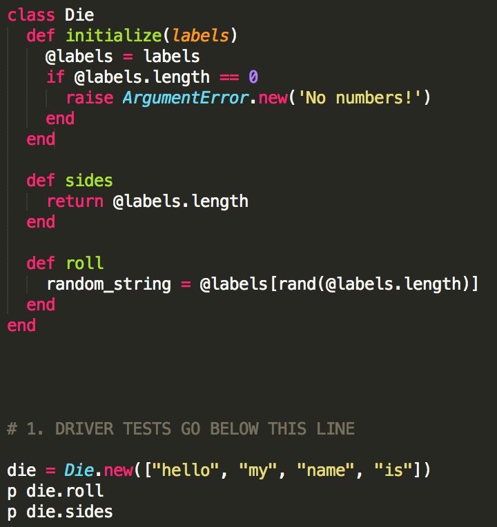

Classes
August 10th, 2015
Hola. For this week's tech blog I'm going to reflect on what Classes are and their syntax in the Ruby language. Just a reminder, I learned most of what I'm trying to teach these past two weeks, so hopefully I'm getting this right!
One important thing we've all heard when beginning to learn Ruby is that EVERYTHING IS AN OBJECT!! In the case of Classes, that is no different! With Object Oriented Programming, assigning certain behaviors and properties to Classes have their benefit!
Let's start off by showing you the syntax for creating a Class. I'm going to be going over one we completed this week for Dev.

In the example above we start off by calling the keyword "class" and then the name of the class, "Die". Note that the first letter of the class name is capitalized. Whenever Ruby creates a new object, it looks for a method named "initialize" and executes what is within the method and sets certain characteristics throughout the entire Class. In the example above, I created a new variable called @labels and set it to the labels in the argument of the initialize method. Seems kind of weird huh? I initially thought so too till I learned the reasoning behind it. The reason why we are setting the argument of the method, "@labels" equal to "labels" is that if you set these characteristics within the "initialize" method, you are setting certain characteristics that you can utilize throughout the whole class! If you happen to have multiple methods within a class, you can easily refer to these variables outside of the "initialize" method!
In the example above, you can see that I put in a conditional within initialize if the @labels.length == 0 to raise an argument Error. Outside of the initialize method, I also created a method called "sides". Within "sides", it returns the length of "@labels". The purpose of building this class was to have the class accept an array of strings, and with a random roll, returns one of the strings in the array.

Above we can see we created another method called "roll" and within it, assigned the results of a random string based on the number of "@labels" to "random_string".
After the Class is now functional, we "create" this class by calling "Die.new" and passing in an array of strings. When calling "die.roll", we take the Object's characteristics and act on the behavior of the method "roll", which produces a random string from the argument given. If you call "die.sides", it will show you how many elements there are in the argument given. Pretty neat huh? The ability to Create a Class and be able to act on different behaviors inside AND outside of the class gives us a lot of pretty cool options within an Object Oriented Programming language!